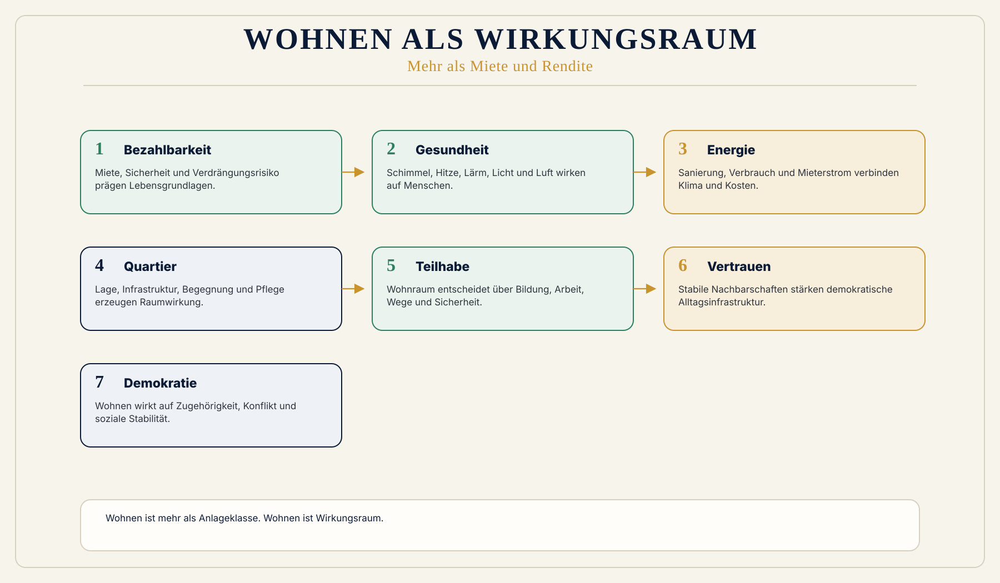

Für Mieter:innen
Bezahlbarkeit, Gesundheit, Sicherheit, Energiearmut, Teilhabe und Quartier.
 Wirkungsökonomie
Wirkungsökonomie
Für wen · Wohnen, Mieten und Eigentum
Wohnen ist kein Finanzprodukt. Wohnen ist Lebensgrundlage.
Wohnen ist Lebensgrundlage, Gesundheit, Sicherheit, Zugehörigkeit, Bildung, Pflege, Quartier und Demokratie.
Der heutige Wohnungsmarkt behandelt Wohnraum zu häufig als Anlageklasse. Kapitalrendite wird sichtbar. Wirkung bleibt unsichtbar: Verdrängung, Mietangst, Hitze, Schimmel, Energiearmut, Einsamkeit, Schulwege, Pflege, Nachbarschaft, Teilhabe und Vertrauen.
Die Wirkungsökonomie fragt: Welche Wohnmodelle stärken Mensch, Planet und Demokratie?
Warmmiete, Gesundheit, Quartier und Schutzgrenzen gemeinsam betrachten. Ein kurzer Einstieg in das Wohnmodell und seine Grenzen.
Wir schauen uns nämlich Natalie Webers offenes Wirtschafts- und Gesellschaftsmodell an.
Ich sehe hier in den Quellen, das Modell nimmt die bestehende Wohnungs- und Stadtpolitik als absoluten Ausgangspunkt.
Das bewertet zwingend die tatsächliche Warmmiete, die Gesundheit der Bewohner und auch mögliche Verdrängungseffekte von Alteingesessenen. Und die Auswirkungen auf das gesamte Quartier, nehme ich an. Ja, exakt. Das oberste Ziel ist dabei immer so eine positive Netto-Wirkung.
Die garantieren weder niedrigere Mieten noch irgendwie steuerfreie Sanierungen oder eine bestimmte Rendite für Investoren.
Nein, nein. Und auch absolut keine mietrechtliche Beratung. Das sind reine Modelle zur Betrachtung und Analyse.
Wer nutzt das dann konkret? Also es bedient genau vier Zielgruppen. Da sind einmal die Bürger, die das nutzen, um so gemachte Wohnversprechen kritisch zu hinterfragen.
Genau. Dann Journalisten, um Quellen und Annahmen zu prüfen. Die Wissenschaft nutzt es als Ansatz zur kritischen Forschung. Und als viertes die Politik.
Bewertet werden ausschließlich Gebäude, Mietmodelle und getroffene Entscheidungen. Also niemals der Wert von Menschen.
Die Nichtkompensation schützt harte, unverhandelbare Grenzen.
Und das zweite Prinzip ist die Reverse Merit Order. Das dient als Begrenzung der Gesamtbewertung in ganz klar definierten kritischen Feldern.
Das Modell trennt messerscharf zwischen den erwarteten Folgen und den tatsächlich belegten Zustandsänderungen und ihrer Ursache.
Grundlage: veröffentlichte Texte von Natalie Weber. Mara und Jonas sind die synthetischen Stimmen dieses Website-Formats. Mara: weibliche Stimme; Jonas: männliche Stimme. Eigenständiges Format neben dem persönlichen Podcast.
Fassung: 19. Oktober 2026.
Drei Perspektiven
Wohnen wirkt gleichzeitig auf Alltag, Eigentum, Quartier und kommunale Stabilität. Die WÖk trennt diese Perspektiven nicht künstlich, sondern macht ihre Wechselwirkungen sichtbar.
Bezahlbarkeit, Gesundheit, Sicherheit, Energiearmut, Teilhabe und Quartier.
Werterhalt, Sanierungsstrategie, Energieeffizienz, Versicherbarkeit, Finanzierung und Stranded-Asset-Risiken.
Quartiersstabilität, Wärmeplanung, soziale Durchmischung, Leerstand, Infrastruktur und demokratische Resilienz.
Warum diese Perspektive wichtig ist
Wohnungspolitik wird häufig in getrennten Problemen diskutiert: Mieten, Neubau, Sanierung, Eigentum, Boden, Energie, Leerstand, Sozialwohnungen. In der Realität wirken diese Felder zusammen.
Eine Wohnung kann bezahlbar sein und krank machen. Eine Sanierung kann Klima schützen und Menschen verdrängen. Ein Neubau kann Wohnraum schaffen und Fläche versiegeln. Eine Kapitalanlage kann Rendite erzeugen und ein Quartier destabilisieren.
Was heute falsch läuft
Das alte System misst Immobilienwert, Rendite, Miete und Quadratmeter.
Es misst zu wenig Lebensqualität, Gesundheit, Energie, soziale Mischung, Quartiersstabilität, Teilhabe und ökologische Wirkung.
Dadurch wird Wohnen zum Marktgut, obwohl es ein Wirkungsraum ist.
Warum Reparatur nicht reicht
Mietrecht, Förderung und Sanierungspflichten können schützen, lösen aber nicht den Maßstabsfehler, wenn Wohnen vor allem als Quadratmeter, Rendite oder Anlageklasse gelesen wird.
Die WÖk bewertet Wohnen als Wirkungsraum: Bezahlbarkeit, Energie, Gesundheit, Quartier, Teilhabe und demokratische Stabilität gehören zusammen.
WÖk-Verschiebung
Die WÖk bewertet Wohnen mehrdimensional: Bezahlbarkeit, Energie, Klima, Gesundheit, Barrierefreiheit, Quartier, Infrastruktur, soziale Mischung, Naturzugang, Demokratie und langfristige Resilienz.
Rendite bleibt nicht automatisch legitim, wenn sie Wirkung zerstört. Investition wird nicht nach Kapital, sondern nach Wirkung gelesen.
Eigentum und Bestand
Die Wirkungsökonomie betrachtet Immobilien nicht nur als Vermögenswerte, sondern als Wirkungsräume. Ein Gebäude wirkt auf Wohnen, Gesundheit, Energieverbrauch, Quartier, soziale Stabilität, Klima, Versicherbarkeit und langfristigen Wert.
Gerade für Eigentümer:innen wird diese Perspektive immer wichtiger. Eine Immobilie ist nicht automatisch zukunftssicher, nur weil sie aus Stein gebaut ist oder im Grundbuch steht. Ein schlecht gedämmtes Gebäude mit fossiler Heizung, hohem Energiebedarf, schlechter Innenraumqualität oder fehlender Sanierungsstrategie kann schrittweise zum finanziellen Risiko werden.
In der Finanzwelt spricht man von Stranded Assets: Vermögenswerten, die an Wert verlieren oder wirtschaftlich unter Druck geraten, weil sich Risiken, Regeln, Märkte, Technologien oder ökologische Bedingungen verändern.
Das betrifft besonders Bestandsimmobilien. Nicht jeder Altbau ist ein Problem. Aber ohne belastbaren Sanierungsfahrplan, Energie- und Verbrauchsdaten, CapEx-Plan, Versicherbarkeitsprüfung und Standortresilienz wird das Risiko für Bewertung, Finanzierung und Vermietbarkeit sichtbarer.
Steuerungswissen statt Panik
Die WÖk übersetzt diese Entwicklung nicht in Alarmismus, sondern in Wirkungsdaten, Wirkungsrisiko und Wirkungsrückkopplung.
So wird Nachhaltigkeit im Immobilienbereich nicht zum moralischen Zusatz, sondern zu Werterhalt, Risikomanagement, Wirkungsresilienz und besserem Kapitalzugang.
Konkreter Gewinn
Was nicht passiert
Die WÖk verspricht nicht, dass alle Mieten automatisch sinken.
Sie ersetzt kein Mietrecht per Knopfdruck.
Sie macht sichtbar, welche Wohnmodelle Kosten auf Mieter:innen, Kommunen, Gesundheit, Klima und Zukunft verschieben.
Wirkungspfad
Konkretes Beispiel
Eine energetische Sanierung mit stabiler Miete, Mieterstrom, Barrierefreiheit, guter Lüftung, Naturzugang und Quartiersnutzen erzeugt andere Wirkung als eine Luxussanierung mit Verdrängung. Beide erhöhen den Gebäudewert. Aber nur eine stärkt Bezahlbarkeit, Gesundheit, Klimaschutz und demokratische Stabilität zusammen.
Visual
Wohnung in der Mitte. Kreise: Bezahlbarkeit, Energie, Gesundheit, Quartier, Teilhabe, Demokratie. Unten: Kapitalrendite allein reicht nicht.

Vertiefung
Die nächste Frage lautet nicht, wie diese Zielgruppe nachhaltiger wird. Sie lautet: Welche alte Steuerungslogik erzeugt das Problem, und wie verändert Wirkung die Logik selbst?
Weiterlesen im Journal
Der Einstieg in Wohnen als Wirkungsraum.
Beitrag lesenWarum verdrängte Immobilienwirkung in Finanzierung, Bewertung und Versicherbarkeit zurückkehrt.
Beitrag lesenDer Lesepfad zu Mieten, Eigentum, Bestand, Wärme und Quartier.
Dossier öffnenQuellenbasis / Einordnung